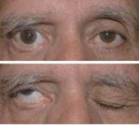

Cornea · Non-infective ulcers
Ulcer with lagophthalmos

Definition: It is a primary non-infective exposure keratitis with improper wetting of the corneal surface and subsequent dryness and ulceration.
Causes:
- They are the causes of lagophthalmos (details in the chapter of eyelids).
Clinical Picture:
- Symptoms: stitching pain, reflex lacrimation and ocular discomfort.
- Signs:
- 1) Corneal ulcer: occurs only in the lower 1/3 of the cornea with an upper straight level.
- 2) Lagophthalmos.
- 3) Xerotic signs.
- 4) Ciliary injection.
- 5) Toxic iritis: with aqueous flare & miosis.
Treatment:
- Treatment of the ulcer along the usual lines but mainly bandage.
- Treatment of the cause of lagophthalmos to prevent recurrences.
- Treatment of dryness due to lagophthalmos:
- a) Artificial tears.
- b) Soft contact lens.
- c) Tarsorrhaphy.